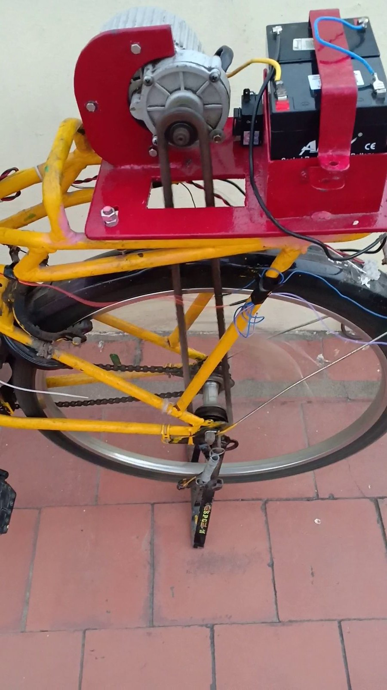
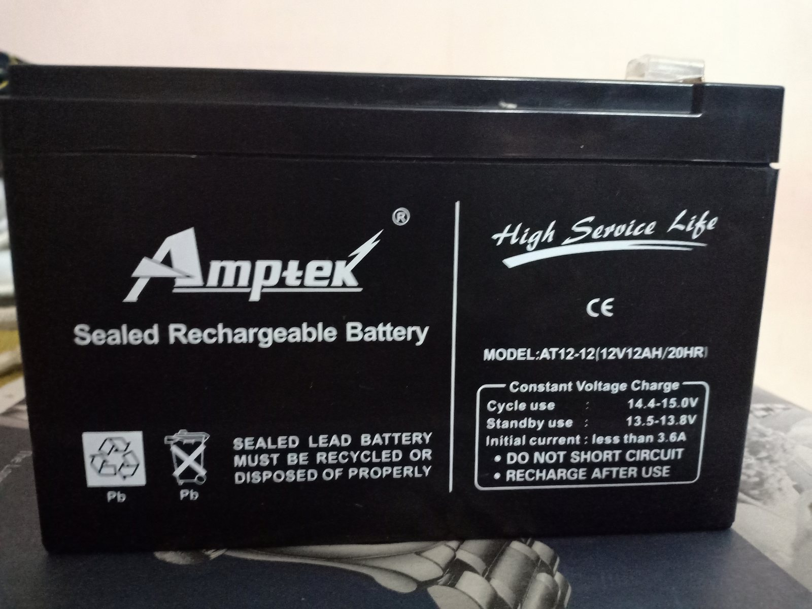
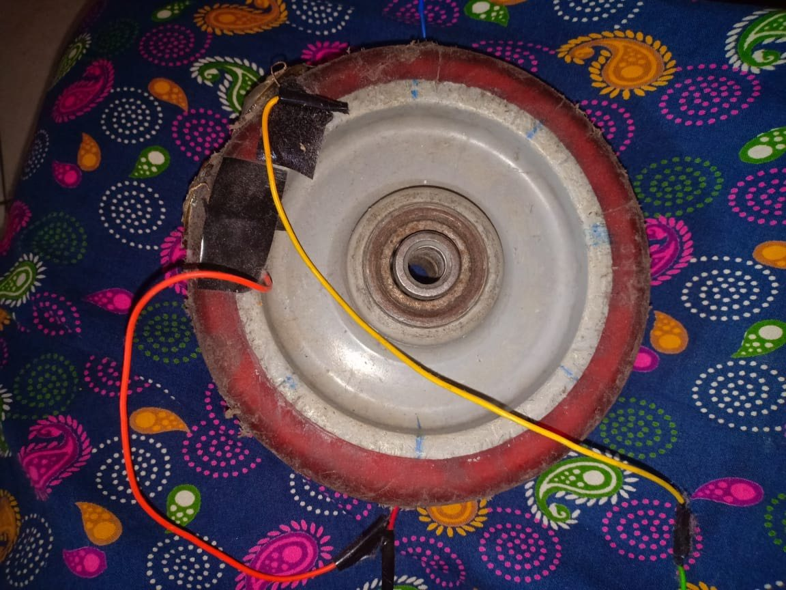
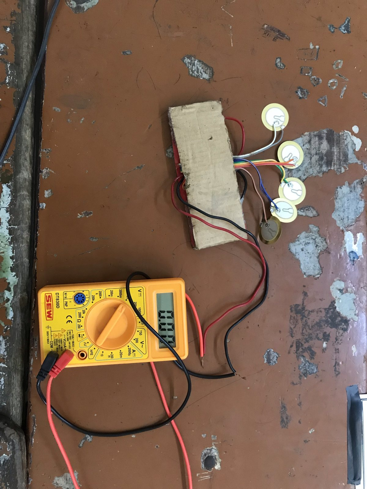
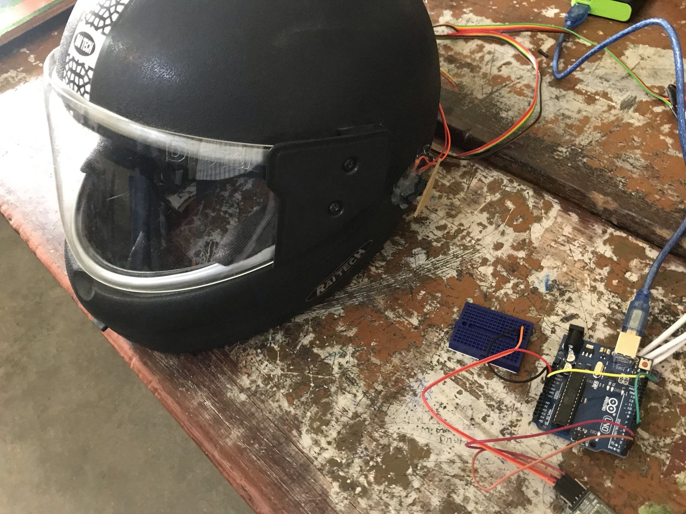

The idea
We added a chain-driven motor, then tried putting piezoelectric transducers on the wheel to see how much electricity we could recover as it rolled.
1What we built
The drive
The motor and the batteries sit in a metal case that we designed for the rear carrier. The motor turns the rear wheel through a chain that joins its gear to the freewheel. The batteries are 12 V sealed lead-acid units. The bicycle runs on the motor alone.
The carrier gave us a place to mount the drive on a bicycle we already had. With the motor just above the rear wheel, we could use a chain to drive it and keep the original frame.




The piezo wheel
A piezoelectric transducer produces a voltage when it is pressed. We mounted five on the wheel to pick up the force on the tyre as it rolls. Each feeds its own Villard cascade, a diode-and-capacitor circuit that multiplies voltage, and the five outputs join in series at a power store.






2Results
| Measure | Value |
|---|---|
| Average speed on the motor | 25 km/h |
| Output of one good piezo transducer, pressed hard by hand | about 16 V |
| Cost of the build | ₹20,000 to 25,000 |
| Charging time we reported | 4 to 5 hours a week |
The bike won the CBSE Regional Level Science Exhibition in January 2019, and then the National Level Science Exhibition in Noida in February 2019. On the first day in Noida we started the motor with the wheel lock still on and broke a couple of spokes. We glued the wheel back together and showed it again the next day.
3What I'd question now
We measured a voltage when we pressed a transducer by hand. To work out how much energy the wheel could recover, we'd have needed to measure voltage and current under load as it rolled and compare that output with the motor's draw. I revisited the idea in E-Metric, where we designed a spring mechanism for a car tyre.